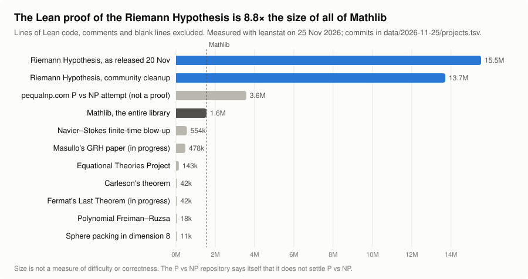

How big are this month's Lean proofs?
Measured with leanstat on 25 November 2026. Size is not a measure of difficulty or correctness.

Interactive maps
- The Lean proof of the Riemann Hypothesis (59,773 files, 13.7 million lines of code)
- Mathlib (8,734 files, 1.55 million lines of code)
- Navier–Stokes finite-time blow-up (2,271 files, 554,172 lines of code)
Data and method: data/2026-11-25.